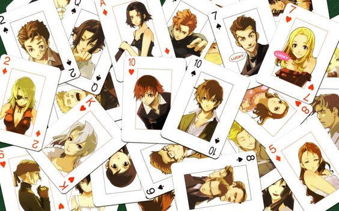

Baccano

Baccano is a Japanese light novel series written by Ryohgo Narita and illustrated by Katsumi Enami. The story revolves around various characters and events over several decades.
Baccano is a Japanese light novel series written by Ryohgo Narita and illustrated by Katsumi Enami. The story revolves around various characters and events over several decades.
A prequel to the iconic series Rurouni Kenshin. The og series has its roots in shonen, dragon ball/yuyu hakusho style. But not this OVA, this takes a very serious look into Samurai X's past,
Sonny Boy is a Japanese anime television series created and directed by Shingo Natsume. It is known for its surreal and philosophical storytelling.
Hajime no Ippo is a Japanese boxing manga series written and illustrated by George Morikawa. It follows the story of high school student Ippo Makunouchi as he begins his career in boxing.
Higurashi no Naku Koro ni, also known as When They Cry, is a Japanese murder mystery dōjin soft visual novel series produced by 07th Expansion.